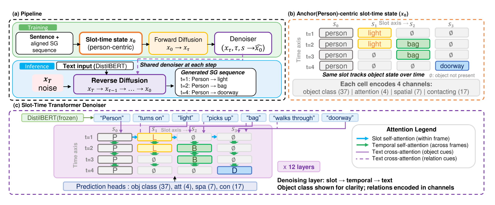

Text-Conditioned Scene Graph Sequence Generation via Discrete Diffusion
A discrete diffusion framework for generating time-ordered scene graph sequences directly from natural-language descriptions of human–object interactions. I led the project end-to-end as first author, from problem formulation and model design to experiments and manuscript preparation.
Paper ↗